In brief
Blizzard announced over 600 new recipes without publishing a complete list. This page gathers the 420 Blacksmithing recipes recorded in the game files (client 1.60.1.70862, consulted on 12 November 2026). Names and required skills come from the game files. An acquisition marked “unknown” remains to be confirmed. Tables are grouped by required skill bracket. When acquisition, source or zone is not given in the data consulted, the cell says so. No drop rates are repeated; none were given.[1][2][4]
Key points
- 420 Blacksmithing recipes listed below, from the game files (client 1.60.1.70862, 12 November 2026); acquisition marked “unknown” remains to be confirmed.[4] Game data (client 1.60.1.70862)
- Acquisition given in the game files: trainer 99, drop 16, quest 28, reputation 52, unknown 225.[4] Game data (client 1.60.1.70862)
- Blizzard has not published the complete recipe list, nor trainers, vendors, prices or drop rates.[1][2]
- Reagents of 420 recipes and 118 materials linked to their “where to find it” card (game files).[5] Game data (client 1.60.1.70862)
How to read this list
This list is not official. Blizzard has not published the details of this profession’s recipes (vendors, trainers, monsters, zones, prices, drop rates). The names and skills below come from the game files (client 1.60.1.70862). An acquisition marked “unknown” remains to be confirmed. The French name is the in-game localization when one was found; otherwise the English name is used in both languages. “Trainer” also covers recipes listed as learned automatically with the profession. An overview page already online, Recipes and advanced blueprints (/en/professions/recipes-and-advanced-blueprints/), restates the official acquisition rules and the lootable recipes already shown by zone.[1][2][4]
Skill 1–75 — 51 recipes (game data)
| Recipe | Required skill | How obtained | Source | Zone | Status |
|---|---|---|---|---|---|
| Coarse Sharpening Stone | 1 | trainer | profession trainer (unnamed) | not recorded | game data |
| Coarse Weightstone | 1 | trainer | profession trainer (unnamed) | not recorded | game data |
| Copper Bracers | 1 | trainer | learned automatically with the profession | not recorded | game data |
| Copper Rod | 1 | trainer | learned automatically with the profession | not recorded | game data |
| Rough Copper Vest | 1 | trainer | learned automatically with the profession | not recorded | game data |
| Rough Sharpening Stone | 1 | trainer | learned automatically with the profession | not recorded | game data |
| Rough Weightstone | 1 | trainer | learned automatically with the profession | not recorded | game data |
| Sharpening Wheel | 1 | trainer | profession trainer (unnamed) | not recorded | game data |
| Copper Chain Vest | 30 | quest | Supplying the Front | not recorded | game data |
| Gemmed Copper Boots | 35 | unknown | not recorded | not recorded | game data — acquisition to be confirmed |
| Gemmed Copper Gauntlets | 35 | unknown | not recorded | not recorded | game data — acquisition to be confirmed |
| Glowing Copper Boots | 35 | unknown | not recorded | not recorded | game data — acquisition to be confirmed |
| Rough Grinding Stone | 35 | trainer | profession trainer (unnamed) | not recorded | game data |
| Strange Copper Boots | 35 | unknown | not recorded | not recorded | game data — acquisition to be confirmed |
| Copper Chain Pants | 40 | trainer | profession trainer (unnamed) | not recorded | game data |
| Coarse Grinding Stone | 44 | trainer | profession trainer (unnamed) | not recorded | game data |
| Acolyte's Chain Belt | 45 | unknown | not recorded | not recorded | game data — acquisition to be confirmed |
| Copper Mace | 45 | trainer | profession trainer (unnamed) | not recorded | game data |
| Crusader's Chain Belt | 45 | unknown | not recorded | not recorded | game data — acquisition to be confirmed |
| Guard's Chain Belt | 45 | unknown | not recorded | not recorded | game data — acquisition to be confirmed |
| Protector's Chain Belt | 45 | unknown | not recorded | not recorded | game data — acquisition to be confirmed |
| Veteran's Chain Belt | 45 | unknown | not recorded | not recorded | game data — acquisition to be confirmed |
| Azure Skyforged Chain | 50 | reputation | Nightclaw Druids (Friendly) | not recorded | game data |
| Azure Skyforged Wristguards | 50 | reputation | Nightclaw Druids (Friendly) | not recorded | game data |
| Cloudy Skyforged Chain | 50 | reputation | Nightclaw Druids (Friendly) | not recorded | game data |
| Cloudy Skyforged Wristguards | 50 | reputation | Nightclaw Druids (Friendly) | not recorded | game data |
| Copper Axe | 50 | trainer | profession trainer (unnamed) | not recorded | game data |
| Copper Chain Boots | 50 | trainer | profession trainer (unnamed) | not recorded | game data |
| Rough Copper Chain Boots | 50 | quest | From Stinger to Axe , The Quarry Smith | not recorded | game data |
| Azure Skyforged Gauntlets | 55 | reputation | Nightclaw Druids (Friendly) | not recorded | game data |
| Azure Skyforged Greaves | 55 | reputation | Nightclaw Druids (Friendly) | not recorded | game data |
| Cloudy Skyforged Gauntlets | 55 | reputation | Nightclaw Druids (Friendly) | not recorded | game data |
| Cloudy Skyforged Greaves | 55 | reputation | Nightclaw Druids (Friendly) | not recorded | game data |
| Copper Claymore | 55 | trainer | profession trainer (unnamed) | not recorded | game data |
| Copper Dagger | 55 | trainer | profession trainer (unnamed) | not recorded | game data |
| Copper Shortsword | 55 | trainer | profession trainer (unnamed) | not recorded | game data |
| Runed Copper Breastplate | 55 | unknown | not recorded | not recorded | game data — acquisition to be confirmed |
| Azure Skyforged Chainmail | 60 | reputation | Nightclaw Druids (Honored) | not recorded | game data |
| Azure Skyforged Legguards | 60 | reputation | Nightclaw Druids (Honored) | not recorded | game data |
| Cloudy Skyforged Chainmail | 60 | reputation | Nightclaw Druids (Honored) | not recorded | game data |
| Cloudy Skyforged Legguards | 60 | reputation | Nightclaw Druids (Honored) | not recorded | game data |
| Copper Battle Axe | 60 | trainer | profession trainer (unnamed) | not recorded | game data |
| Copper Chain Belt | 60 | trainer | profession trainer (unnamed) | not recorded | game data |
| Runed Copper Gauntlets | 65 | trainer | profession trainer (unnamed) | not recorded | game data |
| Runed Copper Pants | 65 | trainer | profession trainer (unnamed) | not recorded | game data |
| Heavy Copper Maul | 70 | trainer | profession trainer (unnamed) | not recorded | game data |
| Ironforge Chain | 70 | trainer | profession trainer (unnamed) | not recorded | game data |
| Silver Skeleton Key | 70 | trainer | profession trainer (unnamed) | not recorded | game data |
| Runed Copper Belt | 75 | trainer | profession trainer (unnamed) | not recorded | game data |
| Silver Rod | 75 | trainer | profession trainer (unnamed) | not recorded | game data |
| Thick War Axe | 75 | trainer | profession trainer (unnamed) | not recorded | game data |
Skill 76–150 — 99 recipes (game data)
| Recipe | Required skill | How obtained | Source | Zone | Status |
|---|---|---|---|---|---|
| Acolyte's Chain Shirt | 80 | unknown | not recorded | not recorded | game data — acquisition to be confirmed |
| Acolyte's Gloves | 80 | drop | Taragaman the Hungerer ; Fel Steed / Shadow Charger | Ragefire Chasm ; Shadowfang Keep | game data |
| Brass Knuckles | 80 | unknown | not recorded | not recorded | game data — acquisition to be confirmed |
| Crusader's Chain Shirt | 80 | unknown | not recorded | not recorded | game data — acquisition to be confirmed |
| Crusader's Gloves | 80 | drop | Rhahk'Zor ; Sneed ; Fel Steed / Shadow Charger | Shadowfang Keep ; The Deadmines | game data |
| Guard's Chain Shirt | 80 | drop | Fel Steed / Shadow Charger | Shadowfang Keep | game data |
| Guard's Gloves | 80 | drop | Taragaman the Hungerer | Ragefire Chasm | game data |
| Protector's Chain Shirt | 80 | unknown | not recorded | not recorded | game data — acquisition to be confirmed |
| Protector's Gloves | 80 | drop | Taragaman the Hungerer ; Rhahk'Zor ; Mr. Smite ; Fel Steed / Shadow Charger | Ragefire Chasm ; Shadowfang Keep ; The Deadmines | game data |
| Veteran's Chain Shirt | 80 | unknown | not recorded | not recorded | game data — acquisition to be confirmed |
| Veteran's Gloves | 80 | drop | Jergosh the Invoker ; Sneed ; Cookie | Ragefire Chasm ; The Deadmines | game data |
| Runed Copper Bracers | 84 | trainer | profession trainer (unnamed) | not recorded | game data |
| Acolyte's Boots | 85 | unknown | not recorded | not recorded | game data — acquisition to be confirmed |
| Crusader's Boots | 85 | unknown | not recorded | not recorded | game data — acquisition to be confirmed |
| Guard's Boots | 85 | unknown | not recorded | not recorded | game data — acquisition to be confirmed |
| Protector's Boots | 85 | unknown | not recorded | not recorded | game data — acquisition to be confirmed |
| Veteran's Boots | 85 | unknown | not recorded | not recorded | game data — acquisition to be confirmed |
| Rough Bronze Boots | 92 | trainer | profession trainer (unnamed) | not recorded | game data |
| Heavy Grinding Stone | 94 | trainer | profession trainer (unnamed) | not recorded | game data |
| Acolyte's Chain Leggings | 95 | unknown | not recorded | not recorded | game data — acquisition to be confirmed |
| Acolyte's Silvered Chain Helm | 95 | drop | Lady Sarevess | Blackfathom Deeps | game data |
| Bronze Dory | 95 | unknown | not recorded | not recorded | game data — acquisition to be confirmed |
| Crusader's Chain Leggings | 95 | unknown | not recorded | not recorded | game data — acquisition to be confirmed |
| Crusader's Silvered Chain Helm | 95 | unknown | not recorded | not recorded | game data — acquisition to be confirmed |
| Guard's Chain Leggings | 95 | unknown | not recorded | not recorded | game data — acquisition to be confirmed |
| Guard's Silvered Chain Helm | 95 | drop | Fel Steed / Shadow Charger | Shadowfang Keep | game data |
| Heavy Sharpening Stone | 95 | trainer | profession trainer (unnamed) | not recorded | game data |
| Heavy Weightstone | 95 | trainer | profession trainer (unnamed) | not recorded | game data |
| Protector's Chain Leggings | 95 | unknown | not recorded | not recorded | game data — acquisition to be confirmed |
| Protector's Silvered Chain Helm | 95 | drop | Fel Steed / Shadow Charger ; Ghamoo-ra ; Lady Sarevess ; Targorr the Dread | Blackfathom Deeps ; Shadowfang Keep ; The Stockade | game data |
| Veteran's Chain Leggings | 95 | unknown | not recorded | not recorded | game data — acquisition to be confirmed |
| Veteran's Silvered Chain Helm | 95 | drop | Targorr the Dread | The Stockade | game data |
| Deadly Bronze Poniard | 100 | unknown | not recorded | not recorded | game data — acquisition to be confirmed |
| Heavy Copper Broadsword | 100 | trainer | profession trainer (unnamed) | not recorded | game data |
| Ironforge Breastplate | 100 | quest | Gearing Redridge | not recorded | game data |
| Silvered Bronze Shoulders | 100 | unknown | not recorded | not recorded | game data — acquisition to be confirmed |
| Sterling Silver Boots | 100 | unknown | not recorded | not recorded | game data — acquisition to be confirmed |
| Big Bronze Knife | 102 | trainer | profession trainer (unnamed) | not recorded | game data |
| Silvered Bronze Breastplate | 105 | unknown | not recorded | not recorded | game data — acquisition to be confirmed |
| Sterling Silver Gauntlet | 105 | unknown | not recorded | not recorded | game data — acquisition to be confirmed |
| Sterling Silver Leggings | 105 | unknown | not recorded | not recorded | game data — acquisition to be confirmed |
| Bronze Mace | 107 | trainer | profession trainer (unnamed) | not recorded | game data |
| Pearl-handled Dagger | 107 | trainer | profession trainer (unnamed) | not recorded | game data |
| Rough Bronze Bracers | 107 | trainer | profession trainer (unnamed) | not recorded | game data |
| Rough Bronze Shoulders | 107 | trainer | profession trainer (unnamed) | not recorded | game data |
| Acolyte's Silvered Chain Shirt | 110 | unknown | not recorded | not recorded | game data — acquisition to be confirmed |
| Cracked Blacksmith Hammer | 110 | unknown | not recorded | not recorded | game data — acquisition to be confirmed |
| Crusader's Silvered Chain Shirt | 110 | unknown | not recorded | not recorded | game data — acquisition to be confirmed |
| Guard's Silvered Chain Shirt | 110 | unknown | not recorded | not recorded | game data — acquisition to be confirmed |
| Protector's Silvered Chain Shirt | 110 | unknown | not recorded | not recorded | game data — acquisition to be confirmed |
| Sterling Silver Shoulders | 110 | unknown | not recorded | not recorded | game data — acquisition to be confirmed |
| Veteran's Silvered Chain Shirt | 110 | unknown | not recorded | not recorded | game data — acquisition to be confirmed |
| Bronze Axe | 112 | trainer | profession trainer (unnamed) | not recorded | game data |
| Rough Bronze Cuirass | 112 | trainer | profession trainer (unnamed) | not recorded | game data |
| Rough Bronze Leggings | 112 | trainer | profession trainer (unnamed) | not recorded | game data |
| Iridescent Hammer | 115 | unknown | not recorded | not recorded | game data — acquisition to be confirmed |
| Bronze Shortsword | 117 | trainer | profession trainer (unnamed) | not recorded | game data |
| Patterned Bronze Bracers | 117 | trainer | profession trainer (unnamed) | not recorded | game data |
| Green Iron Boots | 120 | unknown | not recorded | not recorded | game data — acquisition to be confirmed |
| Iron Buckle | 120 | trainer | profession trainer (unnamed) | not recorded | game data |
| Mighty Iron Hammer | 120 | unknown | not recorded | not recorded | game data — acquisition to be confirmed |
| Acolyte's Chain Helm | 125 | unknown | not recorded | not recorded | game data — acquisition to be confirmed |
| Acolyte's Silvered Chain Leggings | 125 | drop | Aku'mai ; Agathelos the Raging | Blackfathom Deeps ; Razorfen Kraul | game data |
| Crusader's Chain Helm | 125 | unknown | not recorded | not recorded | game data — acquisition to be confirmed |
| Crusader's Silvered Chain Leggings | 125 | drop | Kam Deepfury ; Overlord Ramtusk | Razorfen Kraul ; The Stockade | game data |
| Green Iron Gauntlets | 125 | unknown | not recorded | not recorded | game data — acquisition to be confirmed |
| Guard's Chain Helm | 125 | unknown | not recorded | not recorded | game data — acquisition to be confirmed |
| Guard's Silvered Chain Leggings | 125 | drop | Aku'mai ; Dextren Ward | Blackfathom Deeps ; The Stockade | game data |
| Iron Shield Spike | 125 | unknown | not recorded | not recorded | game data — acquisition to be confirmed |
| Protector's Chain Helm | 125 | unknown | not recorded | not recorded | game data — acquisition to be confirmed |
| Protector's Silvered Chain Leggings | 125 | drop | Gelihast ; Aku'mai ; Hamhock | Blackfathom Deeps ; The Stockade | game data |
| Sterling Silver Breastplate | 125 | unknown | not recorded | not recorded | game data — acquisition to be confirmed |
| Veteran's Chain Helm | 125 | unknown | not recorded | not recorded | game data — acquisition to be confirmed |
| Veteran's Silvered Chain Leggings | 125 | drop | Gelihast ; Old Serra'kis ; Dextren Ward | Blackfathom Deeps ; The Stockade | game data |
| Bronze Greatsword | 127 | trainer | profession trainer (unnamed) | not recorded | game data |
| Heavy Bronze Mace | 127 | trainer | profession trainer (unnamed) | not recorded | game data |
| Silvered Bronze Boots | 127 | trainer | profession trainer (unnamed) | not recorded | game data |
| Iron Fists | 130 | unknown | not recorded | not recorded | game data — acquisition to be confirmed |
| Silvered Bronze Leggings | 130 | unknown | not recorded | not recorded | game data — acquisition to be confirmed |
| Solid Iron Maul | 130 | unknown | not recorded | not recorded | game data — acquisition to be confirmed |
| Bronze Battle Axe | 132 | trainer | profession trainer (unnamed) | not recorded | game data |
| Ironforge Gauntlets | 132 | trainer | profession trainer (unnamed) | not recorded | game data |
| Silvered Bronze Gauntlets | 132 | trainer | profession trainer (unnamed) | not recorded | game data |
| Barbaric Iron Breastplate | 135 | quest | Barbaric Battlements | not recorded | game data |
| Barbaric Iron Shoulders | 135 | quest | On Iron Pauldrons | not recorded | game data |
| Green Iron Shoulders | 135 | unknown | not recorded | not recorded | game data — acquisition to be confirmed |
| Hardened Iron Shortsword | 135 | unknown | not recorded | not recorded | game data — acquisition to be confirmed |
| Anvil | 140 | drop | Gilnid | The Deadmines | game data |
| Iron Counterweight | 140 | unknown | not recorded | not recorded | game data — acquisition to be confirmed |
| Shining Silver Breastplate | 142 | trainer | profession trainer (unnamed) | not recorded | game data |
| Bronze Warhammer | 147 | trainer | profession trainer (unnamed) | not recorded | game data |
| Green Iron Leggings | 149 | trainer | profession trainer (unnamed) | not recorded | game data |
| Barbaric Iron Helm | 150 | quest | Horns of Frenzy | not recorded | game data |
| Jade Serpentblade | 150 | unknown | not recorded | not recorded | game data — acquisition to be confirmed |
| Justicar's Belt | 150 | unknown | not recorded | not recorded | game data — acquisition to be confirmed |
| Officer's Belt | 150 | unknown | not recorded | not recorded | game data — acquisition to be confirmed |
| Prefect's Belt | 150 | unknown | not recorded | not recorded | game data — acquisition to be confirmed |
| Sentinel's Belt | 150 | unknown | not recorded | not recorded | game data — acquisition to be confirmed |
| Warder's Belt | 150 | unknown | not recorded | not recorded | game data — acquisition to be confirmed |
Skill 151–225 — 88 recipes (game data)
| Recipe | Required skill | How obtained | Source | Zone | Status |
|---|---|---|---|---|---|
| Barbaric Iron Boots | 155 | quest | Trampled Under Foot | not recorded | game data |
| Moonsteel Broadsword | 155 | unknown | not recorded | not recorded | game data — acquisition to be confirmed |
| Green Iron Bracers | 159 | trainer | profession trainer (unnamed) | not recorded | game data |
| Barbaric Iron Gloves | 160 | quest | Joys of Omosh | not recorded | game data |
| Massive Iron Axe | 160 | unknown | not recorded | not recorded | game data — acquisition to be confirmed |
| Polished Steel Boots | 160 | unknown | not recorded | not recorded | game data — acquisition to be confirmed |
| Steel Spear | 160 | unknown | not recorded | not recorded | game data — acquisition to be confirmed |
| Green Iron Helm | 164 | trainer | profession trainer (unnamed) | not recorded | game data |
| Edge of Winter | 165 | unknown | not recorded | not recorded | game data — acquisition to be confirmed |
| Iron Morningstar | 165 | quest | Big, No, MASSIVE Iron Axes | not recorded | game data |
| Steel Weapon Chain | 165 | unknown | not recorded | not recorded | game data — acquisition to be confirmed |
| Solid Grinding Stone | 170 | trainer | profession trainer (unnamed) | not recorded | game data |
| Solid Sharpening Stone | 170 | trainer | profession trainer (unnamed) | not recorded | game data |
| Solid Weightstone | 170 | trainer | profession trainer (unnamed) | not recorded | game data |
| Truesilver Skeleton Key | 170 | trainer | profession trainer (unnamed) | not recorded | game data |
| Glinting Steel Dagger | 174 | trainer | profession trainer (unnamed) | not recorded | game data |
| Green Iron Hauberk | 174 | trainer | profession trainer (unnamed) | not recorded | game data |
| Azure Skyforged Helm | 175 | reputation | Kirin Tor (Friendly) | not recorded | game data |
| Azure Skyforged Pauldrons | 175 | reputation | Kirin Tor (Friendly) | not recorded | game data |
| Cloudy Skyforged Helm | 175 | reputation | Earthen Ring (Friendly) | not recorded | game data |
| Cloudy Skyforged Pauldrons | 175 | reputation | Earthen Ring (Friendly) | not recorded | game data |
| Frost Tiger Blade | 175 | unknown | not recorded | not recorded | game data — acquisition to be confirmed |
| Justicar's Gauntlet | 175 | unknown | not recorded | not recorded | game data — acquisition to be confirmed |
| Officer's Gauntlet | 175 | unknown | not recorded | not recorded | game data — acquisition to be confirmed |
| Prefect's Gauntlet | 175 | unknown | not recorded | not recorded | game data — acquisition to be confirmed |
| Sentinel's Gauntlet | 175 | unknown | not recorded | not recorded | game data — acquisition to be confirmed |
| Shadow Crescent Axe | 175 | unknown | not recorded | not recorded | game data — acquisition to be confirmed |
| Truesilver Rod | 175 | trainer | profession trainer (unnamed) | not recorded | game data |
| Warder's Gauntlet | 175 | unknown | not recorded | not recorded | game data — acquisition to be confirmed |
| Mithril Shortsword | 180 | unknown | not recorded | not recorded | game data — acquisition to be confirmed |
| Heavy Mithril Pants | 185 | unknown | not recorded | not recorded | game data — acquisition to be confirmed |
| Mithril Plate Bracers | 190 | unknown | not recorded | not recorded | game data — acquisition to be confirmed |
| Mithril Shield Spike | 190 | unknown | not recorded | not recorded | game data — acquisition to be confirmed |
| Mithril Warhammer | 190 | unknown | not recorded | not recorded | game data — acquisition to be confirmed |
| Steel Breastplate | 194 | trainer | profession trainer (unnamed) | not recorded | game data |
| Blue Glittering Axe | 195 | unknown | not recorded | not recorded | game data — acquisition to be confirmed |
| Heavy Mithril Gauntlet | 195 | trainer | profession trainer (unnamed) | not recorded | game data |
| Heavy Mithril Shoulder | 195 | trainer | profession trainer (unnamed) | not recorded | game data |
| Mithril Blacksmith Hammer | 195 | unknown | not recorded | not recorded | game data — acquisition to be confirmed |
| Mithril Claws | 195 | unknown | not recorded | not recorded | game data — acquisition to be confirmed |
| Mithril Claymore | 195 | unknown | not recorded | not recorded | game data — acquisition to be confirmed |
| Ornate Mithril Gloves | 195 | quest | The Great Silver Deceiver | not recorded | game data |
| Ornate Mithril Pants | 195 | quest | Smelt On, Smelt Off | not recorded | game data |
| Shining Mithril Breastplate | 195 | unknown | not recorded | not recorded | game data — acquisition to be confirmed |
| Shining Mithril Pauldrons | 195 | unknown | not recorded | not recorded | game data — acquisition to be confirmed |
| Inlaid Mithril Cylinder | 200 | unknown | not recorded | not recorded | game data — acquisition to be confirmed |
| Justicar's Boots | 200 | unknown | not recorded | not recorded | game data — acquisition to be confirmed |
| Mithril Plate Pants | 200 | trainer | profession trainer (unnamed) | not recorded | game data |
| Officer's Boots | 200 | unknown | not recorded | not recorded | game data — acquisition to be confirmed |
| Ornate Mithril Shoulders | 200 | quest | The Art of Imbuing Magic | not recorded | game data |
| Prefect's Boots | 200 | unknown | not recorded | not recorded | game data — acquisition to be confirmed |
| Sentinel's Boots | 200 | unknown | not recorded | not recorded | game data — acquisition to be confirmed |
| Shining Mithril Boots | 200 | unknown | not recorded | not recorded | game data — acquisition to be confirmed |
| Warder's Boots | 200 | unknown | not recorded | not recorded | game data — acquisition to be confirmed |
| Wicked Mithril Blade | 200 | unknown | not recorded | not recorded | game data — acquisition to be confirmed |
| Heavy Mithril Axe | 204 | trainer | profession trainer (unnamed) | not recorded | game data |
| Steel Plate Helm | 205 | trainer | profession trainer (unnamed) | not recorded | game data |
| Justicar's Pauldrons | 210 | unknown | not recorded | not recorded | game data — acquisition to be confirmed |
| Mithril Plate Gloves | 210 | trainer | profession trainer (unnamed) | not recorded | game data |
| Mithril Plate Shoulders | 210 | unknown | not recorded | not recorded | game data — acquisition to be confirmed |
| Mithril Spurs | 210 | unknown | not recorded | not recorded | game data — acquisition to be confirmed |
| Mithril Stiletto | 210 | unknown | not recorded | not recorded | game data — acquisition to be confirmed |
| Officer's Pauldrons | 210 | unknown | not recorded | not recorded | game data — acquisition to be confirmed |
| Prefect's Pauldrons | 210 | unknown | not recorded | not recorded | game data — acquisition to be confirmed |
| Sentinel's Pauldrons | 210 | unknown | not recorded | not recorded | game data — acquisition to be confirmed |
| Warder's Pauldrons | 210 | unknown | not recorded | not recorded | game data — acquisition to be confirmed |
| Charged Mithril Battleaxe | 215 | unknown | not recorded | not recorded | game data — acquisition to be confirmed |
| Shining Mithril Helm | 215 | unknown | not recorded | not recorded | game data — acquisition to be confirmed |
| Truesilver Gauntlets | 215 | trainer | profession trainer (unnamed) | not recorded | game data |
| Heavy Mithril Breastplate | 220 | trainer | profession trainer (unnamed) | not recorded | game data |
| Heavy Mithril Helm | 220 | unknown | not recorded | not recorded | game data — acquisition to be confirmed |
| Mithril Coif | 220 | trainer | profession trainer (unnamed) | not recorded | game data |
| Orcish War Leggings | 220 | trainer | profession trainer (unnamed) | not recorded | game data |
| Runed Mithril Hammer | 220 | unknown | not recorded | not recorded | game data — acquisition to be confirmed |
| Shining Mithril Gauntlet | 220 | unknown | not recorded | not recorded | game data — acquisition to be confirmed |
| Shining Mithril Pants | 220 | unknown | not recorded | not recorded | game data — acquisition to be confirmed |
| Big Black Mace | 224 | trainer | profession trainer (unnamed) | not recorded | game data |
| Dense Grinding Stone | 225 | trainer | profession trainer (unnamed) | not recorded | game data |
| Dense Sharpening Stone | 225 | trainer | profession trainer (unnamed) | not recorded | game data |
| Dense Weightstone | 225 | trainer | profession trainer (unnamed) | not recorded | game data |
| Heavy Mithril Boots | 225 | trainer | profession trainer (unnamed) | not recorded | game data |
| Justicar's Wristguards | 225 | unknown | not recorded | not recorded | game data — acquisition to be confirmed |
| Officer's Wristguards | 225 | unknown | not recorded | not recorded | game data — acquisition to be confirmed |
| Prefect's Wristguards | 225 | unknown | not recorded | not recorded | game data — acquisition to be confirmed |
| Sentinel's Wristguards | 225 | unknown | not recorded | not recorded | game data — acquisition to be confirmed |
| Thorium Armor | 225 | unknown | not recorded | not recorded | game data — acquisition to be confirmed |
| Thorium Belt | 225 | unknown | not recorded | not recorded | game data — acquisition to be confirmed |
| Warder's Wristguards | 225 | unknown | not recorded | not recorded | game data — acquisition to be confirmed |
Skill 226–300 — 182 recipes (game data)
| Recipe | Required skill | How obtained | Source | Zone | Status |
|---|---|---|---|---|---|
| The Shatterer | 229 | trainer | profession trainer (unnamed) | not recorded | game data |
| Ebon Shiv | 230 | unknown | not recorded | not recorded | game data — acquisition to be confirmed |
| Ornate Mithril Breastplate | 230 | trainer | profession trainer (unnamed) | not recorded | game data |
| Thorium Bracers | 230 | unknown | not recorded | not recorded | game data — acquisition to be confirmed |
| Ornate Mithril Boots | 235 | trainer | profession trainer (unnamed) | not recorded | game data |
| Ornate Mithril Helm | 235 | trainer | profession trainer (unnamed) | not recorded | game data |
| Radiant Belt | 235 | unknown | not recorded | not recorded | game data — acquisition to be confirmed |
| Truesilver Breastplate | 235 | trainer | profession trainer (unnamed) | not recorded | game data |
| Phantom Blade | 239 | trainer | profession trainer (unnamed) | not recorded | game data |
| Blessed Plate Boots | 240 | unknown | not recorded | not recorded | game data — acquisition to be confirmed |
| Blessed Plate Pauldrons | 240 | unknown | not recorded | not recorded | game data — acquisition to be confirmed |
| Dark Iron Pulverizer | 240 | unknown | not recorded | not recorded | game data — acquisition to be confirmed |
| Imperial Plate Belt | 240 | quest | Imperial Plate Belt | not recorded | game data |
| Imperial Plate Shoulders | 240 | quest | Imperial Plate Shoulders | not recorded | game data |
| Justicar's Sabatons | 240 | unknown | not recorded | not recorded | game data — acquisition to be confirmed |
| Officer's Sabatons | 240 | unknown | not recorded | not recorded | game data — acquisition to be confirmed |
| Prefect's Sabatons | 240 | unknown | not recorded | not recorded | game data — acquisition to be confirmed |
| Sentinel's Sabatons | 240 | unknown | not recorded | not recorded | game data — acquisition to be confirmed |
| Warder's Sabatons | 240 | unknown | not recorded | not recorded | game data — acquisition to be confirmed |
| Blight | 244 | trainer | profession trainer (unnamed) | not recorded | game data |
| Arcanite Rod | 245 | trainer | profession trainer (unnamed) | not recorded | game data |
| Arcanite Skeleton Key | 245 | trainer | profession trainer (unnamed) | not recorded | game data |
| Blessed Plate Gauntlet | 245 | unknown | not recorded | not recorded | game data — acquisition to be confirmed |
| Dark Iron Mail | 245 | unknown | not recorded | not recorded | game data — acquisition to be confirmed |
| Imperial Plate Bracers | 245 | quest | Imperial Plate Bracer | not recorded | game data |
| Radiant Breastplate | 245 | unknown | not recorded | not recorded | game data — acquisition to be confirmed |
| Dark Iron Sunderer | 250 | unknown | not recorded | not recorded | game data — acquisition to be confirmed |
| Dawn's Edge | 250 | quest | Snakestone of the Shadow Huntress | not recorded | game data |
| Justicar's Gloves | 250 | unknown | not recorded | not recorded | game data — acquisition to be confirmed |
| Justicar's Waistguard | 250 | unknown | not recorded | not recorded | game data — acquisition to be confirmed |
| Officer's Gloves | 250 | unknown | not recorded | not recorded | game data — acquisition to be confirmed |
| Officer's Waistguard | 250 | unknown | not recorded | not recorded | game data — acquisition to be confirmed |
| Ornate Thorium Handaxe | 250 | unknown | not recorded | not recorded | game data — acquisition to be confirmed |
| Prefect's Gloves | 250 | unknown | not recorded | not recorded | game data — acquisition to be confirmed |
| Prefect's Waistguard | 250 | unknown | not recorded | not recorded | game data — acquisition to be confirmed |
| Sentinel's Gloves | 250 | unknown | not recorded | not recorded | game data — acquisition to be confirmed |
| Sentinel's Waistguard | 250 | unknown | not recorded | not recorded | game data — acquisition to be confirmed |
| Thorium Cestus | 250 | unknown | not recorded | not recorded | game data — acquisition to be confirmed |
| Thorium Greatmace | 250 | unknown | not recorded | not recorded | game data — acquisition to be confirmed |
| Thorium Shield Spike | 250 | unknown | not recorded | not recorded | game data — acquisition to be confirmed |
| Warder's Gloves | 250 | unknown | not recorded | not recorded | game data — acquisition to be confirmed |
| Warder's Waistguard | 250 | unknown | not recorded | not recorded | game data — acquisition to be confirmed |
| Thorium Greatsword | 254 | trainer | profession trainer (unnamed) | not recorded | game data |
| Truesilver Champion | 254 | trainer | profession trainer (unnamed) | not recorded | game data |
| Blazing Rapier | 255 | quest | Corruption | not recorded | game data |
| Blessed Plate Bracers | 255 | unknown | not recorded | not recorded | game data — acquisition to be confirmed |
| Dark Iron Shoulders | 255 | unknown | not recorded | not recorded | game data — acquisition to be confirmed |
| Enchanted Battlehammer | 255 | quest | Sweet Serenity , Sweet Serenity | not recorded | game data |
| Huge Thorium Battleaxe | 255 | unknown | not recorded | not recorded | game data — acquisition to be confirmed |
| Imperial Plate Gauntlets | 255 | unknown | not recorded | not recorded | game data — acquisition to be confirmed |
| Thorium Boots | 255 | unknown | not recorded | not recorded | game data — acquisition to be confirmed |
| Thorium Helm | 255 | unknown | not recorded | not recorded | game data — acquisition to be confirmed |
| Dark Iron Plate | 260 | unknown | not recorded | not recorded | game data — acquisition to be confirmed |
| Demon Forged Breastplate | 260 | quest | The Demon Forge | not recorded | game data |
| Radiant Gloves | 260 | unknown | not recorded | not recorded | game data — acquisition to be confirmed |
| Serenity | 260 | unknown | not recorded | not recorded | game data — acquisition to be confirmed |
| Thorium Poleaxe | 260 | unknown | not recorded | not recorded | game data — acquisition to be confirmed |
| Bleakwood Hew | 264 | trainer | profession trainer (unnamed) | not recorded | game data |
| Inlaid Thorium Hammer | 264 | trainer | profession trainer (unnamed) | not recorded | game data |
| Corruption | 265 | unknown | not recorded | not recorded | game data — acquisition to be confirmed |
| Dawnbringer Shoulders | 265 | reputation | Argent Dawn (Revered) | not recorded | game data |
| Fiery Plate Gauntlets | 265 | quest | Fiery Plate Gauntlets | not recorded | game data |
| Girdle of the Dawn | 265 | reputation | Argent Dawn (Honored) | not recorded | game data |
| Radiant Boots | 265 | unknown | not recorded | not recorded | game data — acquisition to be confirmed |
| Volcanic Hammer | 265 | unknown | not recorded | not recorded | game data — acquisition to be confirmed |
| Arcanite Blacksmith Hammer | 270 | unknown | not recorded | not recorded | game data — acquisition to be confirmed |
| Blessed Plate Belt | 270 | unknown | not recorded | not recorded | game data — acquisition to be confirmed |
| Blessed Plate Leggings | 270 | unknown | not recorded | not recorded | game data — acquisition to be confirmed |
| Dark Iron Bracers | 270 | reputation | Thorium Brotherhood (Friendly) | not recorded | game data |
| Fiery Chain Girdle | 270 | reputation | Thorium Brotherhood (Honored) | not recorded | game data |
| Imperial Plate Boots | 270 | quest | Imperial Plate Boots | not recorded | game data |
| Imperial Plate Helm | 270 | quest | Imperial Plate Helm | not recorded | game data |
| Radiant Circlet | 270 | unknown | not recorded | not recorded | game data — acquisition to be confirmed |
| Blessed Plate Helm | 275 | unknown | not recorded | not recorded | game data — acquisition to be confirmed |
| Imperial Plate Chest | 275 | quest | Imperial Plate Chest | not recorded | game data |
| Runic Plate Boots | 275 | unknown | not recorded | not recorded | game data — acquisition to be confirmed |
| Runic Plate Shoulders | 275 | unknown | not recorded | not recorded | game data — acquisition to be confirmed |
| Thorium Leggings | 275 | unknown | not recorded | not recorded | game data — acquisition to be confirmed |
| Rune Edge | 279 | trainer | profession trainer (unnamed) | not recorded | game data |
| Blessed Plate Chest | 280 | unknown | not recorded | not recorded | game data — acquisition to be confirmed |
| Imperial Plate Leggings | 280 | quest | Imperial Plate Leggings | not recorded | game data |
| Radiant Leggings | 280 | unknown | not recorded | not recorded | game data — acquisition to be confirmed |
| Runic Plate Helm | 280 | unknown | not recorded | not recorded | game data — acquisition to be confirmed |
| Clutchlord's Grips | 285 | reputation | Cenarion Circle (Friendly) | not recorded | game data |
| Goregasher Grips | 285 | reputation | Cenarion Circle (Friendly) | not recorded | game data |
| Runic Breastplate | 285 | unknown | not recorded | not recorded | game data — acquisition to be confirmed |
| Runic Plate Leggings | 285 | unknown | not recorded | not recorded | game data — acquisition to be confirmed |
| Clutchlord's Support | 290 | reputation | Cenarion Circle (Honored) | not recorded | game data |
| Goregasher Support | 290 | reputation | Cenarion Circle (Honored) | not recorded | game data |
| Whitesoul Helm | 290 | unknown | not recorded | not recorded | game data — acquisition to be confirmed |
| Clutchlord's Stompers | 295 | reputation | Cenarion Circle (Honored) | not recorded | game data |
| Goregasher Stompers | 295 | reputation | Cenarion Circle (Honored) | not recorded | game data |
| Annihilator | 300 | unknown | not recorded | not recorded | game data — acquisition to be confirmed |
| Arcanite Champion | 300 | unknown | not recorded | not recorded | game data — acquisition to be confirmed |
| Arcanite Reaper | 300 | unknown | not recorded | not recorded | game data — acquisition to be confirmed |
| Azerothium Legplates | 300 | unknown | not recorded | not recorded | game data — acquisition to be confirmed |
| Bagh Nakh | 300 | reputation | Timbermaw Hold (Revered) | not recorded | game data |
| Black Amnesty | 300 | reputation | Thorium Brotherhood (Revered) | not recorded | game data |
| Black Grasp of the Destroyer | 300 | unknown | not recorded | not recorded | game data — acquisition to be confirmed |
| Blackfury | 300 | reputation | Thorium Brotherhood (Revered) | not recorded | game data |
| Blackguard | 300 | reputation | Thorium Brotherhood (Exalted) | not recorded | game data |
| Blood Talon | 300 | trainer | profession trainer (unnamed) | not recorded | game data |
| Bloodsoul Breastplate | 300 | reputation | Zandalar Tribe (Revered) | not recorded | game data |
| Bloodsoul Gauntlets | 300 | reputation | Zandalar Tribe (Friendly) | not recorded | game data |
| Bloodsoul Shoulders | 300 | reputation | Zandalar Tribe (Honored) | not recorded | game data |
| Breastplate of Salvation | 300 | unknown | not recorded | not recorded | game data — acquisition to be confirmed |
| Champion's Legplates | 300 | unknown | not recorded | not recorded | game data — acquisition to be confirmed |
| Dark Iron Boots | 300 | reputation | Thorium Brotherhood (Exalted) | not recorded | game data |
| Dark Iron Destroyer | 300 | reputation | Thorium Brotherhood (Honored) | not recorded | game data |
| Dark Iron Gauntlets | 300 | reputation | Thorium Brotherhood (Revered) | not recorded | game data |
| Dark Iron Helm | 300 | reputation | Thorium Brotherhood (Honored) | not recorded | game data |
| Dark Iron Leggings | 300 | reputation | Thorium Brotherhood (Revered) | not recorded | game data |
| Dark Iron Reaver | 300 | reputation | Thorium Brotherhood (Honored) | not recorded | game data |
| Darkrune Breastplate | 300 | unknown | not recorded | not recorded | game data — acquisition to be confirmed |
| Darkrune Gauntlets | 300 | unknown | not recorded | not recorded | game data — acquisition to be confirmed |
| Darkrune Helm | 300 | unknown | not recorded | not recorded | game data — acquisition to be confirmed |
| Darksoul Breastplate | 300 | reputation | Zandalar Tribe (Revered) | not recorded | game data |
| Darksoul Leggings | 300 | reputation | Zandalar Tribe (Honored) | not recorded | game data |
| Darksoul Shoulders | 300 | reputation | Zandalar Tribe (Friendly) | not recorded | game data |
| Darkspear | 300 | trainer | profession trainer (unnamed) | not recorded | game data |
| Depleted Thorium Sabatons | 300 | unknown | not recorded | not recorded | game data — acquisition to be confirmed |
| Ebon Hand | 300 | reputation | Thorium Brotherhood (Exalted) | not recorded | game data |
| Elemental Sharpening Stone | 300 | unknown | not recorded | not recorded | game data — acquisition to be confirmed |
| Enchanted Thorium Breastplate | 300 | quest | Enchanted Thorium Platemail: Volume I | not recorded | game data |
| Enchanted Thorium Helm | 300 | quest | Enchanted Thorium Platemail: Volume III | not recorded | game data |
| Enchanted Thorium Leggings | 300 | quest | Enchanted Thorium Platemail: Volume II | not recorded | game data |
| Enriched Thorium Breastplate | 300 | unknown | not recorded | not recorded | game data — acquisition to be confirmed |
| Enriched Thorium Helm | 300 | unknown | not recorded | not recorded | game data — acquisition to be confirmed |
| Enriched Thorium Leggings | 300 | unknown | not recorded | not recorded | game data — acquisition to be confirmed |
| Evergreen Shield | 300 | unknown | not recorded | not recorded | game data — acquisition to be confirmed |
| Fiery Chain Shoulders | 300 | reputation | Thorium Brotherhood (Revered) | not recorded | game data |
| Forest Defender's Axe | 300 | unknown | not recorded | not recorded | game data — acquisition to be confirmed |
| Frostguard | 300 | unknown | not recorded | not recorded | game data — acquisition to be confirmed |
| Gauntlets of Glory | 300 | unknown | not recorded | not recorded | game data — acquisition to be confirmed |
| Gloves of the Dawn | 300 | reputation | Argent Dawn (Revered) | not recorded | game data |
| Greaves of Glory | 300 | unknown | not recorded | not recorded | game data — acquisition to be confirmed |
| Greenhammer | 300 | unknown | not recorded | not recorded | game data — acquisition to be confirmed |
| Hammer of the Titans | 300 | unknown | not recorded | not recorded | game data — acquisition to be confirmed |
| Handguards of Glory | 300 | unknown | not recorded | not recorded | game data — acquisition to be confirmed |
| Heartseeker | 300 | unknown | not recorded | not recorded | game data — acquisition to be confirmed |
| Heavy Obsidian Belt | 300 | trainer | profession trainer (unnamed) | not recorded | game data |
| Heavy Thorium Gauntlets | 300 | unknown | not recorded | not recorded | game data — acquisition to be confirmed |
| Icebane Bracers | 300 | reputation | Hydraxian Waterlords (Revered) | not recorded | game data |
| Icebane Breastplate | 300 | reputation | Argent Dawn (Exalted) | not recorded | game data |
| Icebane Gauntlets | 300 | reputation | Argent Dawn (Revered) | not recorded | game data |
| Ironvine Belt | 300 | trainer | profession trainer (unnamed) | not recorded | game data |
| Ironvine Breastplate | 300 | trainer | profession trainer (unnamed) | not recorded | game data |
| Ironvine Gloves | 300 | trainer | profession trainer (unnamed) | not recorded | game data |
| Ironwood Blade | 300 | unknown | not recorded | not recorded | game data — acquisition to be confirmed |
| Jagged Obsidian Shield | 300 | reputation | Cenarion Circle (Revered) | not recorded | game data |
| Justice Epaulets | 300 | unknown | not recorded | not recorded | game data — acquisition to be confirmed |
| Justice Gauntlets | 300 | unknown | not recorded | not recorded | game data — acquisition to be confirmed |
| Justice Gloves | 300 | unknown | not recorded | not recorded | game data — acquisition to be confirmed |
| Justice Greaves | 300 | unknown | not recorded | not recorded | game data — acquisition to be confirmed |
| Justice Handguards | 300 | unknown | not recorded | not recorded | game data — acquisition to be confirmed |
| Justice Leggings | 300 | unknown | not recorded | not recorded | game data — acquisition to be confirmed |
| Justice Legguards | 300 | unknown | not recorded | not recorded | game data — acquisition to be confirmed |
| Justice Legplates | 300 | unknown | not recorded | not recorded | game data — acquisition to be confirmed |
| Justice Pauldrons | 300 | unknown | not recorded | not recorded | game data — acquisition to be confirmed |
| Justice Sabatons | 300 | unknown | not recorded | not recorded | game data — acquisition to be confirmed |
| Justice Spaulders | 300 | unknown | not recorded | not recorded | game data — acquisition to be confirmed |
| Justice Treads | 300 | unknown | not recorded | not recorded | game data — acquisition to be confirmed |
| Legguards of Glory | 300 | unknown | not recorded | not recorded | game data — acquisition to be confirmed |
| Legionite Glaive | 300 | unknown | not recorded | not recorded | game data — acquisition to be confirmed |
| Legplates of Glory | 300 | unknown | not recorded | not recorded | game data — acquisition to be confirmed |
| Light Obsidian Belt | 300 | trainer | profession trainer (unnamed) | not recorded | game data |
| Lionheart Helm | 300 | unknown | not recorded | not recorded | game data — acquisition to be confirmed |
| Martyr's Legplates | 300 | unknown | not recorded | not recorded | game data — acquisition to be confirmed |
| Master Forge | 300 | unknown | not recorded | not recorded | game data — acquisition to be confirmed |
| Masterwork Stormhammer | 300 | unknown | not recorded | not recorded | game data — acquisition to be confirmed |
| Nightfall | 300 | reputation | Thorium Brotherhood (Exalted) | not recorded | game data |
| Obsidian Mail Tunic | 300 | reputation | Cenarion Circle (Exalted) | not recorded | game data |
| Pauldrons of Glory | 300 | unknown | not recorded | not recorded | game data — acquisition to be confirmed |
| Persuader | 300 | unknown | not recorded | not recorded | game data — acquisition to be confirmed |
| Sabatons of Glory | 300 | unknown | not recorded | not recorded | game data — acquisition to be confirmed |
| Sageblade | 300 | unknown | not recorded | not recorded | game data — acquisition to be confirmed |
| Shoulders of Glory | 300 | unknown | not recorded | not recorded | game data — acquisition to be confirmed |
| Stalwart Helm | 300 | unknown | not recorded | not recorded | game data — acquisition to be confirmed |
| Stormcarver | 300 | reputation | Timbermaw Hold (Revered) | not recorded | game data |
| Sulfuron Hammer | 300 | quest | A Binding Contract | not recorded | game data |
| Thick Obsidian Breastplate | 300 | unknown | not recorded | not recorded | game data — acquisition to be confirmed |
| Titanic Leggings | 300 | unknown | not recorded | not recorded | game data — acquisition to be confirmed |
Materials: where to find them
The 118 materials asked for by the 420 recipes on this page, sorted by family, with the number of recipes using each. Each material leads to its “where to find it” card; the folding table gives the reagents of each recipe. Reagents read from the game files (client 1.60.1.70862). All families: Materials: where to find them.[5] Game data (client 1.60.1.70862)
Ore, bars and stone — 30
 Thorium Bar96
Thorium Bar96 Bronze Bar68
Bronze Bar68 Arcanite Bar56
Arcanite Bar56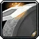
Coarse Grinding Stone53 Copper Bar51
Copper Bar51 Mithril Bar51
Mithril Bar51 Solid Grinding Stone51
Solid Grinding Stone51 Heavy Grinding Stone47
Heavy Grinding Stone47 Heavy Thorium Bar37
Heavy Thorium Bar37 Silver Bar33
Silver Bar33 Truesilver Bar32
Truesilver Bar32 Iron Bar31
Iron Bar31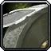
Rough Grinding Stone31 Elemental Flux26
Elemental Flux26 Enchanted Thorium Bar26
Enchanted Thorium Bar26 Dark Iron Bar22
Dark Iron Bar22 Dense Grinding Stone21
Dense Grinding Stone21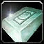
Steel Bar20 Legionite Bar17
Legionite Bar17 Azerothium Bar9
Azerothium Bar9 Gold Bar8
Gold Bar8 Small Obsidian Shard6
Small Obsidian Shard6 Dense Stone4
Dense Stone4 Large Obsidian Shard4
Large Obsidian Shard4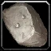
Rough Stone4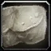
Coarse Stone3 Guardian Stone3
Guardian Stone3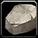
Heavy Stone3 Solid Stone3
Solid Stone3 Sulfuron Ingot1
Sulfuron Ingot1
Herbs — 4
Leather, hides and scales — 9
 Pristine Leather30
Pristine Leather30 Heavy Leather21
Heavy Leather21 Rugged Leather18
Rugged Leather18 Medium Leather16
Medium Leather16 Enchanted Leather15
Enchanted Leather15 Thick Leather15
Thick Leather15 Light Leather8
Light Leather8 Core Leather2
Core Leather2 Devilsaur Leather1
Devilsaur Leather1
Cloth — 3
Elemental and enchanting materials — 19
 Malleable Essence of Nature27
Malleable Essence of Nature27 Heart of Fire14
Heart of Fire14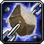
Essence of Earth13 Large Glowing Shard10
Large Glowing Shard10 Lesser Magic Essence10
Lesser Magic Essence10 Strange Dust10
Strange Dust10 Essence of Fire9
Essence of Fire9 Globe of Water8
Globe of Water8 Essence of Water7
Essence of Water7 Essence of Air5
Essence of Air5 Living Essence5
Living Essence5 Core of Earth4
Core of Earth4 Elemental Earth3
Elemental Earth3 Essence of Undeath3
Essence of Undeath3 Breath of Wind2
Breath of Wind2 Elemental Air2
Elemental Air2 Elemental Water1
Elemental Water1 Ichor of Undeath1
Ichor of Undeath1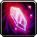
Nexus Crystal1
Engineering parts — 2
Thread, vials, dyes and other reagents — 34
 Sulfuric Acid30
Sulfuric Acid30 Star Ruby24
Star Ruby24 Blue Sapphire20
Blue Sapphire20 Strong Flux20
Strong Flux20 Weak Flux19
Weak Flux19 Shadowgem18
Shadowgem18 Tigerseye16
Tigerseye16 Fiery Core14
Fiery Core14 Lava Core14
Lava Core14 Azerothian Diamond13
Azerothian Diamond13 Black Pearl13
Black Pearl13 Jade13
Jade13 Small Lustrous Pearl13
Small Lustrous Pearl13 Aquamarine11
Aquamarine11 Citrine11
Citrine11 Huge Emerald11
Huge Emerald11 Large Opal11
Large Opal11 Lesser Moonstone10
Lesser Moonstone10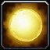
Golden Pearl8 Green Dye6
Green Dye6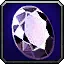
Souldarite6 Blood of the Mountain5
Blood of the Mountain5 Malachite5
Malachite5 Dark Rune4
Dark Rune4 Demonic Rune4
Demonic Rune4 Moss Agate4
Moss Agate4 Frozen Rune3
Frozen Rune3 Large Fang3
Large Fang3 Powerful Mojo3
Powerful Mojo3- Righteous Orb3
 Iridescent Pearl2
Iridescent Pearl2 Sharp Claw2
Sharp Claw2 Torbernite1
Torbernite1 Wicked Claw1
Wicked Claw1
Items used as reagents — 17
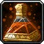
Flask of Supreme Power3 Frost Oil2
Frost Oil2 Red Power Crystal2
Red Power Crystal2 Yellow Power Crystal2
Yellow Power Crystal2- Black Diamond1
 Blue Power Crystal1
Blue Power Crystal1 Elixir of Ogre Strength1
Elixir of Ogre Strength1 Flask of Distilled Wisdom1
Flask of Distilled Wisdom1 Flask of the Titans1
Flask of the Titans1 Golem Heart1
Golem Heart1 Green Leather Armor1
Green Leather Armor1- Green Power Crystal1
 Guardian Gloves1
Guardian Gloves1 Lesser Invisibility Potion1
Lesser Invisibility Potion1 Shadow Oil1
Shadow Oil1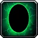
Skin of Shadow1 Swiftness Potion1
Swiftness Potion1
Reagents of each recipe · 420 recipes
Correction history
- 12 November 2026 (draft, not approved): first complete list of this profession’s recipes, from client-extracted data, marked “to be confirmed”. No publication.[4][1]
- 13 November 2026: “to be confirmed” removed from facts found in the game files (client 1.60.1.70862), t359u decision. Acquisition marked “unknown”, zones not given, sources without a build stamp, and inferred values remain to be confirmed. This is not an official Blizzard confirmation, and not a publication.[4] Game data (client 1.60.1.70862)
- 14 November 2026: internal links to already published sheets (bestiaries, recipe lists, dungeons) — v40 batch, t361u. No new facts.[1][2][3][4]
- 17 November 2026 (v42): added the “Materials: where to find them” section (reagents of each recipe, read from the game files, client 1.60.1.70862).[5] Game data (client 1.60.1.70862)
What is confirmed / what remains to be confirmed
Confirmed by official sources
Still to be confirmed
- Complete official list of recipes, materials, prices and named trainers: not published by Blizzard.
- For some recipes, acquisition, source or zone was not given in the data consulted; those cells stay as “not recorded”.
- Drop rates: not given in the data consulted, and not officially published.
- Some recipes have no distinct French name in the data consulted: the English name is then used.
Key dates
Sources
- [1] World of Warcraft: Forever Deep Dive Panel Recap (EN) · published · accessed
Récapitulatif de la présentation « Au cœur de World of Warcraft: Forever » (FR) · published · accessed - [2] Gather Around the Campfire in World of Warcraft: Forever (EN) · published · accessed
Retrouvez-vous autour d’un feu de camp dans World of Warcraft: Forever (FR) · published · accessed - [3] WoW: Forever Hotfixes - November 11, 2026 (EN) · published · accessed
- [4] Blacksmithing profession guide — full recipe list (game data (client 1.60.1.70862) (EN) · no publication date shown · accessed
Guide Forge — liste des recettes (données du jeu (client 1.60.1.70862) (FR) · no publication date shown · accessed Game data — client 1.60.1.70862 - [5] WoW Forever client files, build 1.60.1.70862 — data tables and icons read from Blizzard’s official CDN (EN) · no publication date shown · accessed Game data — client 1.60.1.70862
Official Blizzard Entertainment sources (all rights reserved). This wiki offers an original synthesis; only short quotes are reproduced. Announced information may change before or after launch. Sources marked “game data” come from the WoW Forever client files (build 1.60.1.70862). This is not an official Blizzard confirmation.
Documentary version : World of Warcraft: Forever — annonces officielles et fichiers du jeu (client 1.60.1.70862), état documentaire 2026-11-17 · revision 17